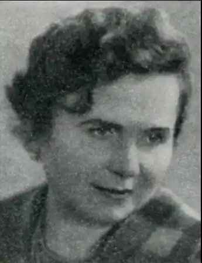

Народилася 10 червня 1916 року (м. Біла Церква) в сім'ї єврейського письменника Ісая Ісаковича Шкаровського (1891–1945). Вчилася у Київському книжково-кооперативному технікумі, отримала вищу освіту на філологічному факультеті Київського університету (1940 рік). З 17-річного віку працювала у київській пресі (газети "Молодий пролетар", "Комсомолець України").
Під час нацистської окупації Києва перебувала в евакуації в Уфі, працювала в евакогоспіталі. Після визволення Києва у різні роки завідувала відділом шкіл газети "Молодь України", відділом художньої літератури журналу "Барвінок", редакцією науково-художньої літератури видавництва "Веселка".
Ірина Шкаровська розпочала друкувати прозові твори для дітей і юнацтва, літературно-критичні нариси з 1948 року. Писала українською та російською мовами. Значну частину доробку письменниці присвячено минувшині Києва. У її творах діють юні персонажі, які беруть участь у революційному русі 1905–1907 років, у подіях громадського життя перших років радянської влади, відзначаються героїчними вчинками під час німецько-радянської війни. На сторінках повістей та оповідань Ірини Шкаровської постають виразні сцени київського життя різних епох. Художньо-документальна повість "Крылатая улица", що вийшла друком у рік 1500-річчя Києва (1982), розповідає про краєзнавчі пошуки київських школярів, що вивчають місцеві старожитності. Згадано, зокрема, вчителів та учнів середньої школи № 25, яку збудовано на найдавнішій території Києва. Член Спілки письменників СРСР з 1956 року. Нагороджена медалями "За доблесну працю у Великій Вітчизняній війні 1941–1945 рр." і "За трудову доблесть". Померла у Києві 17 листопада 1986 року.